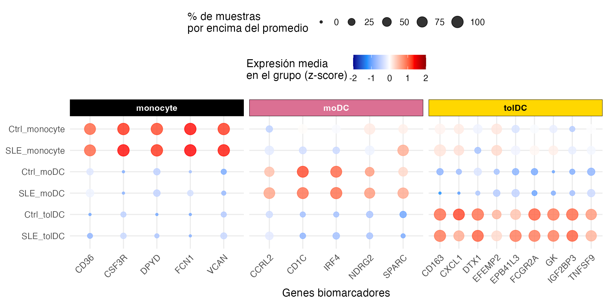
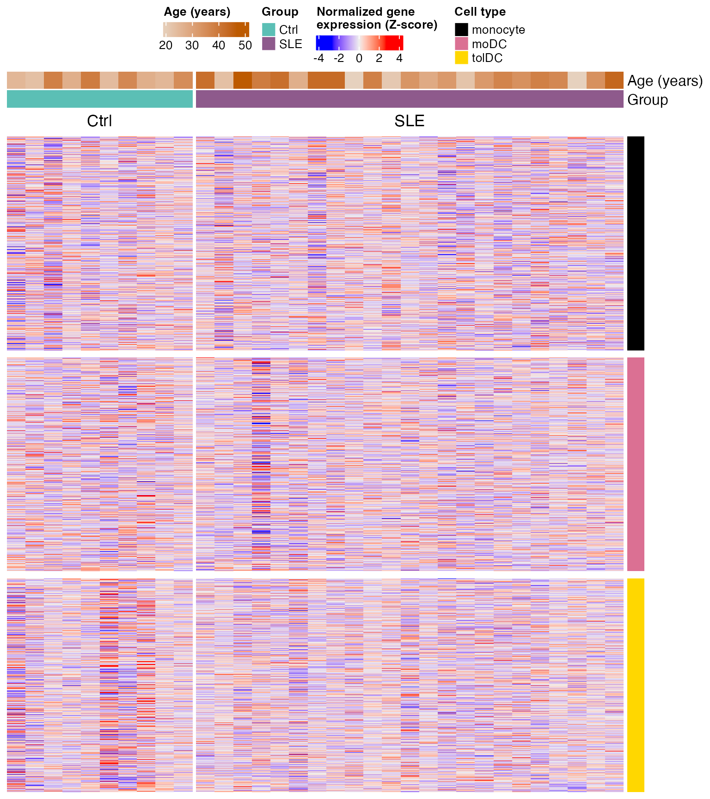
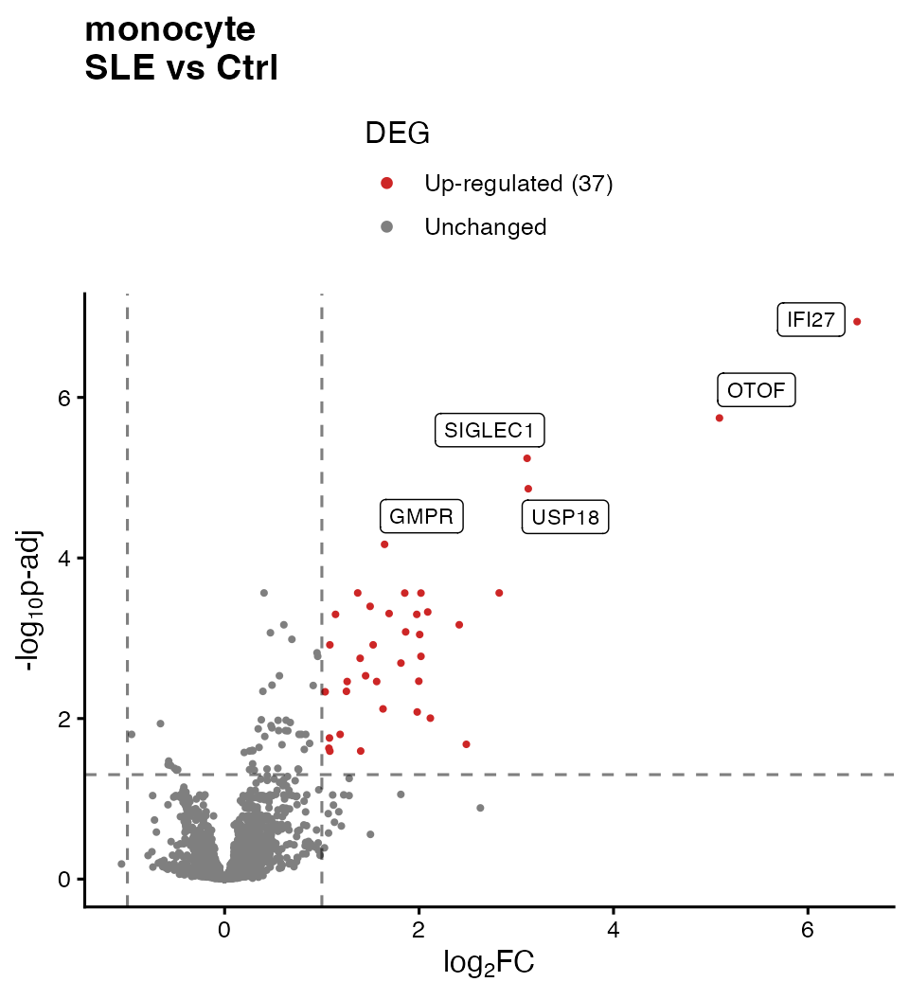
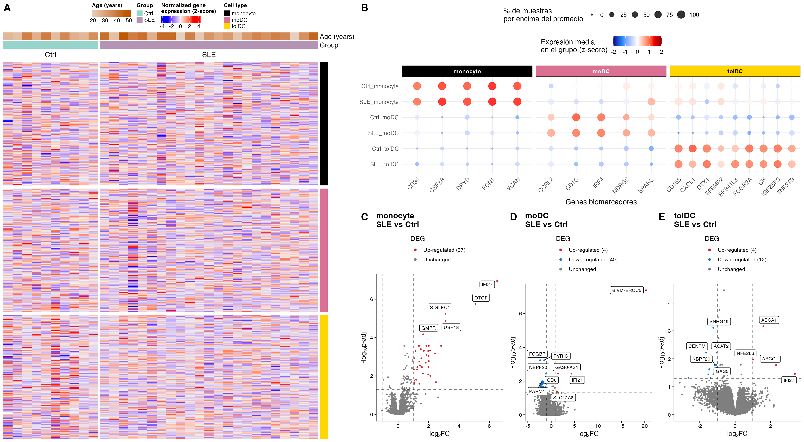

Lección 3: Genes diferencialmente expresados entre pacientes y controles
Validación de tipos celulares, expresión diferencial y volcano plots
2026-10-28
Código:vignettes/l3_DEGs_es.Rmd
l3_DEGs_es.RmdBienvenida
En las lecciones anteriores conociste a las participantes y exploraste la expresión génica: viste que el tipo celular domina la variación y que algunas pacientes tienen una firma de interferón. Ahora haremos la pregunta central del estudio con estadística: ¿qué genes cambian su expresión en el lupus, dentro de cada tipo celular?
Lo que necesitas saber antes: haber hecho la lección De las cuentas de RNA-seq a la exploración de datos (normalización, VST, z-scores y PCA).
Al terminar podrás:
- Validar la identidad de los tipos celulares con genes biomarcadores.
- Hacer un análisis de expresión diferencial con
DESeq2y entender cada columna de sus resultados. - Definir genes diferencialmente expresados (DEG) con umbrales de log2 fold change y de valor p ajustado.
- Construir e interpretar volcano plots.
- Reproducir la Figura 2 del artículo.
Tiempo estimado: 1.5 horas.
Mapa de la lección
flowchart LR A["Datos del paquete
cuentas + metadatos"] --> B["1. Biomarcadores:
¿son las células correctas?"] A --> C["2. Heatmap global
por tipo celular"] A --> D["3. DESeq2:
SLE vs Ctrl por tipo celular"] D --> E["4. DEG:
|LFC| ≥ 1 y padj < 0.05"] E --> F["5. Volcano plots"] B --> G["Figura 2"] C --> G F --> G
Glosario
Estos son los términos que usaremos. Vuelve aquí cada vez que lo necesites.
- Biomarcador: gen cuya expresión caracteriza a un tipo celular.
- Expresión diferencial: diferencia en la expresión de un gen entre dos condiciones (aquí, SLE contra Ctrl).
- DEG (differentially expressed gene): gen diferencialmente expresado según los umbrales que elijamos.
- Fold change: cuántas veces cambia la expresión. Un fold change de 2 significa el doble.
- log2 fold change (LFC): el fold change en escala log2. LFC = 1 es el doble; LFC = −1, la mitad; LFC = 0, sin cambio.
-
Prueba de Wald: prueba que usa
DESeq2para evaluar si el LFC es distinto de cero. - Valor p: probabilidad de observar datos tan extremos como los nuestros si la hipótesis nula fuera cierta (aquí, si en realidad no hubiera diferencia).
- Comparaciones múltiples: al probar miles de genes, algunos saldrán significativos por azar.
- FDR (false discovery rate): proporción esperada de falsos positivos entre los genes que declaramos significativos.
- Benjamini–Hochberg (BH): método que corrige los valores p para controlar el FDR.
- padj: valor p ajustado por BH. Es el que se usa para decidir.
-
Filtrado independiente:
DESeq2no calculapadjpara genes con muy pocas lecturas, porque no tienen poder estadístico; quedan comoNA. - Volcano plot: gráfica de LFC (eje x) contra significancia (eje y) de todos los genes.
1. Preparación
library(GeneExprLupusMx) # datos del paquete y funciones para heatmaps
library(DESeq2) # expresión diferencial
library(tidyverse) # manipulación de tablas y gráficas
library(ComplexHeatmap) # heatmaps
library(circlize) # escalas de color para ComplexHeatmap
library(ggrepel) # etiquetas que no se enciman
library(cowplot) # unir gráficas en un panelColores y umbrales que usaremos en toda la lección:
cell_color <- c(monocyte = "black", moDC = "palevioletred", tolDC = "gold1")
group_color <- c(Ctrl = "#96d4ccff", SLE = "#b493b4ff")
lfc_threshold <- 1 # |log2 fold change| mínimo
padj_threshold <- 0.05 # valor p ajustado máximoPunto de partida
Esta lección usa los datos del paquete: las cuentas
(filtered_txi), los metadatos
(metadata_cleaned), la información de las voluntarias
(volunteer_info) y el checkpoint zscore_mat de
la lección anterior.
Para el análisis de expresión diferencial partimos de las
cuentas crudas de todos los genes. Creamos un objeto
DESeqDataSet con el diseño ~ Group (SLE contra
Ctrl), que después dividiremos por tipo celular:
metadata_cleaned$Group <- relevel(metadata_cleaned$Group, ref = "Ctrl")
full_dds <- DESeqDataSetFromTximport(txi = filtered_txi,
colData = metadata_cleaned,
design = ~ Group)
full_dds
#> class: DESeqDataSet
#> dim: 21718 99
#> metadata(1): version
#> assays(2): counts avgTxLength
#> rownames(21718): A1BG A1BG-AS1 ... ZZEF1 ZZZ3
#> rowData names(0):
#> colnames(99): QR011_0 QR011_1 ... QR108_1 QR108_3
#> colData names(14): sample_ID Group ... SLEDAI_Md SLEDAI_category¿Por qué no usamos el checkpoint dds?
En la lección anterior filtramos los genes poco expresados para
visualizar. Para la expresión diferencial no hace falta:
DESeq2 aplica su propio filtrado
independiente y deja padj = NA en los genes sin
información. Partir de todas las cuentas deja que DESeq2
decida qué genes tienen información suficiente para probarse.
2. Paso 1: ¿las células son lo que dicen ser?
Antes de comparar pacientes contra controles, comprobemos que cada muestra es del tipo celular que dice ser. Para eso usamos biomarcadores: genes conocidos por expresarse en un tipo celular y no en los otros.
markers <- list(
monocyte = c("CD36", "CSF3R", "DPYD", "FCN1", "VCAN"),
moDC = c("CD1C", "IRF4", "NDRG2", "CCRL2", "SPARC"), # como en la Figura 2B publicada
tolDC = c("IGF2BP3", "CD163", "FCGR2A", "DTX1", "GK", "EPB41L3", "TNFSF9", "CXCL1", "EFEMP2")
)
marker_genes <- unlist(markers)
all(marker_genes %in% rownames(zscore_mat)) # ¿están todos en los datos?
#> [1] TRUEPara cada combinación de grupo y tipo celular calculamos dos números por gen, a partir de los z-scores:
- Expresión media (z-score): positiva si el gen está por encima de su promedio en ese grupo.
- Porcentaje de muestras por encima del promedio (z-score > 0): qué tan consistente es esa expresión entre las muestras del grupo.
marker_df <- as.data.frame(zscore_mat[marker_genes, ]) %>%
rownames_to_column("gene") %>%
pivot_longer(-gene, names_to = "sample_ID", values_to = "expression") %>%
left_join(dplyr::select(metadata_cleaned, sample_ID, Group, Cell_type), by = "sample_ID") %>%
group_by(Group, Cell_type, gene) %>%
summarise(mean_expression = mean(expression),
pct_expressed = 100 * mean(expression > 0),
.groups = "drop") %>%
mutate(condition = paste(Group, Cell_type, sep = "_"),
marker_group = factor(case_when(gene %in% markers$monocyte ~ "monocyte",
gene %in% markers$moDC ~ "moDC",
gene %in% markers$tolDC ~ "tolDC"),
levels = names(markers)))
head(marker_df)
#> # A tibble: 6 × 7
#> Group Cell_type gene mean_expression pct_expressed condition marker_group
#> <fct> <fct> <chr> <dbl> <dbl> <chr> <fct>
#> 1 Ctrl moDC CCRL2 0.451 60 Ctrl_moDC moDC
#> 2 Ctrl moDC CD163 -0.829 20 Ctrl_moDC tolDC
#> 3 Ctrl moDC CD1C 1.18 90 Ctrl_moDC moDC
#> 4 Ctrl moDC CD36 -0.264 20 Ctrl_moDC monocyte
#> 5 Ctrl moDC CSF3R -0.893 0 Ctrl_moDC monocyte
#> 6 Ctrl moDC CXCL1 -0.721 10 Ctrl_moDC tolDCLo graficamos como un dot plot: el color es la expresión media y el tamaño, el porcentaje de muestras.
# valores mínimo y máximo de la expresión media, para la escala de color
min_val <- min(marker_df$mean_expression, na.rm = TRUE)
max_val <- max(marker_df$mean_expression, na.rm = TRUE)
p_markers <- marker_df %>%
mutate(condition = factor(condition, levels = c("SLE_tolDC", "Ctrl_tolDC", "SLE_moDC",
"Ctrl_moDC", "SLE_monocyte", "Ctrl_monocyte"))) %>%
ggplot(aes(x = gene, y = condition, color = mean_expression, size = pct_expressed)) +
geom_point(alpha = 0.8) +
scale_color_gradientn(
colors = c("darkblue", "dodgerblue", "white", "red", "darkred"),
values = scales::rescale(c(-2, min_val, 0, max_val, 2)),
limits = c(-2, 2),
oob = scales::squish # valores fuera de [-2, 2] toman el color del extremo
) +
ggh4x::facet_wrap2(
~ marker_group, scales = "free_x", nrow = 1,
strip = ggh4x::strip_themed(
background_x = lapply(cell_color, function(col) element_rect(fill = col)),
text_x = list(element_text(color = "white", face = "bold"),
element_text(color = "white", face = "bold"),
element_text(color = "black", face = "bold")))) +
labs(x = "Genes biomarcadores", y = NULL,
color = "Expresión media\nen el grupo (z-score)",
size = "% de muestras\npor encima del promedio") +
theme_minimal(base_size = 13) +
theme(legend.position = "top", legend.box = "vertical",
axis.text.x = element_text(angle = 45, hjust = 1))
p_markers
¿Qué observas? Cada grupo de biomarcadores está en rojo (alta expresión) justo en su tipo celular, tanto en controles como en pacientes, y en azul en los demás. La identidad de las muestras es correcta: podemos confiar en las comparaciones que haremos.
3. Paso 2: una mirada global con un heatmap
Antes de la estadística, veamos todos los genes a la vez. Calcularemos los z-scores dentro de cada tipo celular (no entre todas las muestras), para que el color muestre cómo se compara cada muestra con las demás de su mismo tipo celular.
La función get_heatmap_mat() del paquete hace la
transformación VST, quita los genes sin variación y calcula los
z-scores:
cell_types <- c("monocyte", "moDC", "tolDC")
heatmap_mats <- lapply(cell_types, function(cell) {
mat <- get_heatmap_mat(full_dds[, full_dds$Cell_type == cell])
colnames(mat) <- sub("_.*", "", colnames(mat)) # QR011_0 -> QR011
mat
})
names(heatmap_mats) <- cell_types
sapply(heatmap_mats, nrow) # genes con variación en cada tipo celular
#> monocyte moDC tolDC
#> 17142 16986 18045Renombramos las columnas con el identificador de la voluntaria
(QR011_0 → QR011): así, en los tres heatmaps,
cada columna es la misma persona. Nos quedamos con los
genes presentes en los tres y ordenamos a las voluntarias por grupo y
actividad de la enfermedad:
common_genes <- Reduce(intersect, lapply(heatmap_mats, rownames))
length(common_genes)
#> [1] 16283
sample_info <- volunteer_info %>%
arrange(Group, SLEDAI)
heatmap_mats <- lapply(heatmap_mats, function(mat) mat[common_genes, sample_info$Volunteer_ID])Ahora construimos un heatmap por tipo celular con
create_heatmap(), del paquete, y los apilamos. Arriba
agregamos dos anotaciones: la edad y el grupo de cada voluntaria.
top_annotation <- HeatmapAnnotation(
"Age (years)" = sample_info$Age_years,
Group = sample_info$Group,
col = list("Age (years)" = colorRamp2(range(sample_info$Age_years), c("#e6d1be", "#bd5a00")),
Group = group_color),
annotation_legend_param = list("Age (years)" = list(direction = "horizontal"))
)
heatmap_list <- create_heatmap(heatmap_mats$monocyte, cell_color[["monocyte"]], sample_info$Group) %v%
create_heatmap(heatmap_mats$moDC, cell_color[["moDC"]], sample_info$Group) %v%
create_heatmap(heatmap_mats$tolDC, cell_color[["tolDC"]], sample_info$Group)
cell_legend <- Legend(labels = cell_types, title = "Cell type",
legend_gp = grid::gpar(fill = cell_color))
ht_opt$message <- FALSE
draw(top_annotation %v% heatmap_list,
merge_legends = TRUE, annotation_legend_list = list(cell_legend),
annotation_legend_side = "top", heatmap_legend_side = "top")
Cada bloque es un tipo celular (barra de color a la derecha), cada fila un gen y cada columna una voluntaria. No se ve un patrón obvio que separe a pacientes de controles: las diferencias, si existen, están en relativamente pocos genes y no se aprecian a simple vista entre más de 16,000. Para encontrarlas necesitamos estadística.
4. Paso 3: expresión diferencial con DESeq2
4.1 La pregunta
Para cada gen, en cada tipo celular, nos preguntamos: ¿su expresión es distinta en pacientes que en controles? Hacemos el análisis por separado para cada tipo celular, porque ya vimos (en el PCA de la lección anterior) que el tipo celular es la mayor fuente de variación: mezclarlos taparía las diferencias del lupus.
4.2 Paso a paso con los monocitos
Seleccionamos las 33 muestras de monocitos:
dds_mo <- full_dds[, full_dds$Cell_type == "monocyte"]
dds_mo$Cell_type <- droplevels(dds_mo$Cell_type) # quitar los niveles que ya no existen
design(dds_mo) # ~ Group
#> ~Group
table(dds_mo$Group)
#>
#> Ctrl SLE
#> 10 23DESeq() hace todo el análisis en una sola función, en
tres pasos:
- Normalización: estima los factores de tamaño (como en la lección anterior).
- Dispersión: estima cuánto varía cada gen entre réplicas del mismo grupo.
- Modelo y prueba: ajusta un modelo binomial negativo y evalúa con la prueba de Wald si el LFC entre grupos es distinto de cero.
dds_mo <- DESeq(dds_mo, quiet = TRUE)
resultsNames(dds_mo) # comparaciones disponibles
#> [1] "Intercept" "Group_SLE_vs_Ctrl"Extraemos la comparación Group_SLE_vs_Ctrl (SLE contra
la referencia, Ctrl):
res_mo <- results(dds_mo, name = "Group_SLE_vs_Ctrl")
head(res_mo[order(res_mo$padj), ])
#> log2 fold change (MLE): Group SLE vs Ctrl
#> Wald test p-value: Group SLE vs Ctrl
#> DataFrame with 6 rows and 6 columns
#> baseMean log2FoldChange lfcSE stat pvalue padj
#> <numeric> <numeric> <numeric> <numeric> <numeric> <numeric>
#> IFI27 745.809 6.50566 0.965817 6.73591 1.62908e-11 1.13758e-07
#> OTOF 725.570 5.08949 0.819047 6.21392 5.16796e-10 1.80439e-06
#> SIGLEC1 8360.445 3.11093 0.521640 5.96375 2.46508e-09 5.73787e-06
#> USP18 758.460 3.12316 0.541137 5.77148 7.85805e-09 1.37182e-05
#> GMPR 403.561 1.64509 0.301470 5.45691 4.84500e-08 6.76652e-05
#> IFI44L 6547.050 2.82422 0.550876 5.12678 2.94735e-07 2.72543e-04¿Qué significa cada columna?
| Columna | Significado |
|---|---|
baseMean |
Expresión media normalizada del gen en todas las muestras |
log2FoldChange |
LFC de SLE contra Ctrl: positivo = más alto en pacientes; negativo = más bajo |
lfcSE |
Error estándar del LFC (incertidumbre de la estimación) |
stat |
Estadístico de la prueba de Wald (LFC / lfcSE) |
pvalue |
Valor p de la prueba de Wald |
padj |
Valor p ajustado por Benjamini–Hochberg (el que usamos para decidir) |
IFI27 encabeza la lista: su LFC de 6.5 significa que en
los monocitos de las pacientes se expresa unas 26.5 ≈ 90
veces más que en los controles. Es uno de los genes de la firma de
interferón que viste en la lección anterior.
summary(res_mo, alpha = padj_threshold)
#>
#> out of 17139 with nonzero total read count
#> adjusted p-value < 0.05
#> LFC > 0 (up) : 76, 0.44%
#> LFC < 0 (down) : 8, 0.047%
#> outliers [1] : 0, 0%
#> low counts [2] : 10159, 59%
#> (mean count < 381)
#> [1] see 'cooksCutoff' argument of ?results
#> [2] see 'independentFiltering' argument of ?results¿Por qué tantos NA en
padj? Es el filtrado
independiente: los genes con muy pocas lecturas no tienen poder
para detectar diferencias, así que DESeq2 los excluye de la
corrección por comparaciones múltiples. Así gana poder para los demás.
También pueden quedar en NA genes con valores extremos
(outliers). Esos genes no se consideran en el análisis.
4.3 Los tres tipos celulares
Repetimos lo mismo para cada tipo celular con una función. Guardamos los resultados como tablas, con el nombre del gen en una columna:
run_de <- function(cell) {
dds_cell <- full_dds[, full_dds$Cell_type == cell]
dds_cell$Cell_type <- droplevels(dds_cell$Cell_type)
dds_cell <- DESeq(dds_cell, quiet = TRUE)
results(dds_cell, name = "Group_SLE_vs_Ctrl") %>%
as.data.frame() %>%
rownames_to_column("gene")
}
de_results <- lapply(cell_types, run_de)
names(de_results) <- cell_types
sapply(de_results, nrow)
#> monocyte moDC tolDC
#> 21718 21718 217185. Paso 4: ¿qué genes cambian?
Un gen es diferencialmente expresado (DEG) si cumple dos condiciones:
-
Significancia estadística:
padj < 0.05. -
Magnitud del cambio:
|log2FoldChange| ≥ 1, es decir, al menos el doble o la mitad.
Pedir las dos cosas evita quedarnos con genes que cambian “significativamente” pero muy poco, y con genes que cambian mucho pero de forma poco confiable.
classify_deg <- function(df) {
df %>%
filter(!is.na(padj)) %>%
mutate(Expression = case_when(
log2FoldChange >= lfc_threshold & padj < padj_threshold ~ "Up-regulated",
log2FoldChange <= -lfc_threshold & padj < padj_threshold ~ "Down-regulated",
TRUE ~ "Unchanged"))
}
de_classified <- lapply(de_results, classify_deg)
sapply(de_classified, function(df) table(factor(df$Expression,
levels = c("Up-regulated", "Down-regulated", "Unchanged"))))
#> monocyte moDC tolDC
#> Up-regulated 37 4 4
#> Down-regulated 0 40 12
#> Unchanged 6946 15313 13146| Tipo celular | Sube en SLE | Baja en SLE |
|---|---|---|
| Monocitos | 37 | 0 |
| moDC | 4 | 40 |
| tolDC | 4 | 12 |
En los monocitos todos los cambios son aumentos; en las células dendríticas diferenciadas in vitro, predominan las disminuciones.
Reto 1. ¿Cuántos genes suben y bajan en cada tipo
celular si usas |LFC| ≥ 0.5 en lugar de 1?
Pista: cambia lfc_threshold y vuelve a aplicar
classify_deg().
Ver solución
lfc_threshold <- 0.5
sapply(lapply(de_results, classify_deg), function(df) table(factor(df$Expression,
levels = c("Up-regulated", "Down-regulated", "Unchanged"))))
#> monocyte moDC tolDC
#> Up-regulated 58 6 5
#> Down-regulated 6 42 26
#> Unchanged 6919 15309 13131
lfc_threshold <- 1 # regresamos al umbral originalCon un umbral más permisivo aparecen más DEG (por ejemplo, 58 en lugar de 37 en monocitos). La elección del umbral cambia los resultados, por eso siempre hay que reportarlo.
6. Paso 5: volcano plots
6.1 Cómo leer un volcano plot
Un volcano plot muestra todos los genes de una comparación:
- Eje x — log2 fold change: a la derecha, genes más altos en SLE; a la izquierda, más bajos.
-
Eje y — −log10(padj): entre más arriba, más
significativo. Un
padjde 0.05 queda en 1.3; uno de 0.0001, en 4. - Líneas punteadas: los umbrales. Los genes arriba de la línea horizontal y fuera de las verticales son DEG.
La forma de “volcán” aparece porque los genes con cambios grandes suelen ser también los más significativos.
6.2 Una función para los tres tipos celulares
Escribimos una función que colorea los genes según su clasificación,
dibuja los umbrales y etiqueta los 5 genes más significativos de cada
dirección (puedes cambiarlo con n_labels):
plot_volcano <- function(df, title, n_labels = 5) {
n_up <- sum(df$Expression == "Up-regulated")
n_down <- sum(df$Expression == "Down-regulated")
df <- df %>%
mutate(DEG = factor(Expression,
levels = c("Up-regulated", "Down-regulated", "Unchanged"),
labels = c(paste0("Up-regulated (", n_up, ")"),
paste0("Down-regulated (", n_down, ")"),
"Unchanged")))
deg_colors <- setNames(c("firebrick3", "dodgerblue3", "gray50"), levels(df$DEG))
# genes a etiquetar: los más significativos de cada dirección
top_genes <- df %>%
filter(Expression != "Unchanged") %>%
group_by(Expression) %>%
arrange(padj, desc(abs(log2FoldChange)), .by_group = TRUE) %>%
slice_head(n = n_labels) %>%
ungroup()
ggplot(df, aes(x = log2FoldChange, y = -log10(padj))) +
geom_point(aes(color = DEG), size = 0.7) +
geom_vline(xintercept = c(-lfc_threshold, lfc_threshold), linetype = "dashed", alpha = 0.5) +
geom_hline(yintercept = -log10(padj_threshold), linetype = "dashed", alpha = 0.5) +
geom_label_repel(data = top_genes, aes(label = gene), size = 3, max.overlaps = Inf) +
scale_color_manual(values = deg_colors) +
guides(color = guide_legend(override.aes = list(size = 1.5))) +
labs(title = title, color = "DEG",
x = expression("log"[2] * "FC"), y = expression("-log"[10] * "p-adj")) +
theme_classic(base_size = 12) +
theme(plot.title = element_text(face = "bold"), legend.position = "top",
legend.direction = "vertical")
}6.3 Monocitos
p_volcano_mo <- plot_volcano(de_classified$monocyte, "monocyte\nSLE vs Ctrl")
p_volcano_mo
Los 37 DEG de los monocitos suben en las pacientes,
y casi ninguno baja. Los más significativos (IFI27,
SIGLEC1, USP18, IFI44L,
OTOF) son genes estimulados por
interferón: es la firma de interferón que viste en la lección
anterior, ahora confirmada con estadística.
6.4 moDC
p_volcano_modc <- plot_volcano(de_classified$moDC, "moDC\nSLE vs Ctrl")
p_volcano_modc
En las moDC el patrón se invierte: predominan los genes que
bajan (40) y solo 4 suben. IFI27 sigue apareciendo
entre los que suben.
Cuidado con los LFC extremos.
BIVM-ERCC5 aparece con un LFC cercano a 20 (un millón de
veces más). Valores así suelen deberse a genes con casi cero
lecturas en uno de los grupos: la división entre un número casi
nulo infla el fold change. Antes de interpretar un gen así,
revisa sus cuentas normalizadas. DESeq2 ofrece
lfcShrink() para obtener LFC más realistas en estos
casos.
6.5 tolDC
p_volcano_toldc <- plot_volcano(de_classified$tolDC, "tolDC\nSLE vs Ctrl")
p_volcano_toldc
En las tolDC hay 4 genes que suben y 12 que bajan. Entre los que
suben están ABCA1 y ABCG1, transportadores de
colesterol: una pista de alteraciones en el metabolismo de
lípidos, que exploraremos en la siguiente lección.
6.6 ¿Qué genes comparten los tipos celulares?
up_genes <- lapply(de_classified, function(df) df$gene[df$Expression == "Up-regulated"])
down_genes <- lapply(de_classified, function(df) df$gene[df$Expression == "Down-regulated"])
Reduce(intersect, up_genes) # suben en los tres tipos celulares
#> [1] "IFI27"
intersect(down_genes$moDC, down_genes$tolDC) # bajan en moDC y tolDC
#> [1] "NBPF20"
c(up = length(unique(unlist(up_genes))), down = length(unique(unlist(down_genes))))
#> up down
#> 43 51IFI27 sube en los tres tipos celulares:
es una marca compartida del lupus que persiste incluso después de
diferenciar las células in vitro. En total hay 94 DEG
distintos (43 que suben y 51 que bajan); en la siguiente
lección averiguaremos qué funciones biológicas tienen.
Reto 2. Haz una tabla con el LFC y el
padj de IFI27, USP18 y
SIGLEC1 en los tres tipos celulares. ¿En cuál cambia más
cada gen?
Pista: bind_rows(de_results, .id = "Cell_type")
junta las tres tablas en una sola.
Ver solución
bind_rows(de_results, .id = "Cell_type") %>%
filter(gene %in% c("IFI27", "USP18", "SIGLEC1")) %>%
dplyr::select(gene, Cell_type, log2FoldChange, padj) %>%
arrange(gene, Cell_type)
#> gene Cell_type log2FoldChange padj
#> 1 IFI27 moDC 4.31361093 3.635566e-03
#> 2 IFI27 monocyte 6.50565571 1.137584e-07
#> 3 IFI27 tolDC 3.38219155 3.445094e-02
#> 4 SIGLEC1 moDC -0.42105695 9.995599e-01
#> 5 SIGLEC1 monocyte 3.11093020 5.737873e-06
#> 6 SIGLEC1 tolDC 0.04520298 9.765996e-01
#> 7 USP18 moDC 0.47562454 5.871915e-01
#> 8 USP18 monocyte 3.12316050 1.371820e-05
#> 9 USP18 tolDC 0.74759493 1.489008e-01Los tres genes cambian más en los monocitos. IFI27 es el
único significativo en los tres tipos celulares.
Reto 3. Guarda en un archivo CSV los DEG de las
moDC, ordenados por padj.
Pista: filter(), arrange() y
write.csv().
7. Para terminar: la Figura 2 del artículo
Reunimos todo en la Figura 2. El heatmap de
ComplexHeatmap no es una gráfica de ggplot2,
así que primero lo “capturamos” como objeto gráfico con
grid::grid.grabExpr() para poder combinarlo con las
demás:
p_heatmap <- grid::grid.grabExpr(
draw(top_annotation %v% heatmap_list,
merge_legends = TRUE, annotation_legend_list = list(cell_legend),
annotation_legend_side = "top", heatmap_legend_side = "top"),
wrap.grobs = TRUE # guarda el código de dibujo para poder redibujarlo dentro del panel
)
right_panels <- plot_grid(
p_markers,
plot_grid(p_volcano_mo, p_volcano_modc, p_volcano_toldc,
labels = c("C", "D", "E"), label_size = 18, nrow = 1),
labels = c("B", ""), label_size = 18, ncol = 1, rel_heights = c(0.9, 1)
)
figure_2 <- plot_grid(p_heatmap, right_panels, labels = c("A", ""), label_size = 18,
nrow = 1, rel_widths = c(0.8, 1))
figure_2
# Número de DEG por tipo celular, para el pie de figura
up_n <- function(cell) sum(de_classified[[cell]]$Expression == "Up-regulated")
down_n <- function(cell) sum(de_classified[[cell]]$Expression == "Down-regulated")Figura 2. Validación de los tipos celulares y perfil transcriptómico integrado entre grupos. (A) Heatmap de la expresión génica normalizada, con los genes en las filas y las muestras en las columnas, para monocitos, moDC y tolDC diferenciadas in vitro. La escala de color representa las cuentas normalizadas en z-score. En la parte superior se anotan la edad y el grupo de cada voluntaria (SLE o Ctrl). (B) Biomarcadores específicos de cada tipo celular. La escala de color indica la expresión media por grupo (z-score) y el tamaño del punto, el porcentaje de muestras por encima del promedio de cada gen. Cada columna es un biomarcador del tipo celular indicado arriba. (C–E) Volcano plots de los genes diferencialmente expresados entre grupos en (C) monocitos (37 suben y 0 bajan en SLE), (D) moDC (4 suben y 40 bajan) y (E) tolDC (4 suben y 12 bajan). Los DEG se seleccionaron con |LFC| ≥ 1 y padj < 0.05, usando la prueba de Wald con corrección de Benjamini–Hochberg (FDR).
La figura original se encuentra en el artículo.
Para guardarla en alta resolución:
ggsave("Figura_2.png", figure_2, width = 20, height = 11, dpi = 300)8. Checkpoint para la siguiente lección
No necesitas guardar nada: el paquete incluye el resultado de esta
lección con el mismo nombre, de_results (los resultados de
DESeq2 de los tres tipos celulares). La siguiente lección
empezará desde ahí.
9. Resumen
| Paso | Función clave | ¿Para qué? |
|---|---|---|
| Validar tipos celulares | dot plot de biomarcadores | Confirmar la identidad de las muestras |
| Vista global |
get_heatmap_mat(), create_heatmap()
|
Ver la expresión de todos los genes |
| Expresión diferencial |
DESeq(), results()
|
Probar cada gen: SLE contra Ctrl |
| Definir DEG |
padj < 0.05 y |LFC| ≥ 1
|
Quedarnos con cambios confiables y relevantes |
| Visualizar | volcano plot | Ver magnitud y significancia de todos los genes |
| Comparar tipos celulares | intersect() |
Encontrar cambios compartidos |
Errores comunes de principiante
-
Usar
pvalueen lugar depadj: con miles de genes, cientos saldrían significativos por azar. - Mezclar todos los tipos celulares en una sola comparación: la variación entre tipos celulares tapa las diferencias del lupus.
- Interpretar un LFC enorme sin revisar las cuentas: puede venir de genes casi sin lecturas.
- No reportar los umbrales: el número de DEG depende de ellos.
- Pensar que “no es DEG” significa “no cambia”: con 10 controles, el poder estadístico es limitado.
10. Próximos pasos
Ya identificamos qué genes cambian entre pacientes y controles. La lección Funciones biológicas de los genes diferencialmente expresados aborda qué funciones cumplen: mediante un análisis de enriquecimiento funcional, asociaremos los 94 DEG con procesos biológicos y rutas de Gene Ontology y Reactome.
Para continuar, da clic en el botón Siguiente lección: Funciones biológicas de los DEG al final de esta página.
↑ Volver a InicioInformación de la sesión
sessionInfo()
#> R version 4.6.0 (2026-04-24)
#> Platform: aarch64-apple-darwin23
#> Running under: macOS Tahoe 26.6.2
#>
#> Matrix products: default
#> BLAS: /Library/Frameworks/R.framework/Versions/4.6/Resources/lib/libRblas.0.dylib
#> LAPACK: /Library/Frameworks/R.framework/Versions/4.6/Resources/lib/libRlapack.dylib; LAPACK version 3.12.1
#>
#> locale:
#> [1] en_US.UTF-8/en_US.UTF-8/en_US.UTF-8/C/en_US.UTF-8/en_US.UTF-8
#>
#> time zone: America/Mexico_City
#> tzcode source: internal
#>
#> attached base packages:
#> [1] grid stats4 stats graphics grDevices utils datasets
#> [8] methods base
#>
#> other attached packages:
#> [1] cowplot_1.2.0 ggrepel_0.9.8
#> [3] circlize_0.4.18 ComplexHeatmap_2.28.0
#> [5] lubridate_1.9.5 forcats_1.0.1
#> [7] stringr_1.6.0 dplyr_1.2.1
#> [9] purrr_1.2.2 readr_2.2.0
#> [11] tidyr_1.3.2 tibble_3.3.1
#> [13] ggplot2_4.0.3 tidyverse_2.0.0
#> [15] DESeq2_1.52.0 SummarizedExperiment_1.42.0
#> [17] Biobase_2.72.0 MatrixGenerics_1.24.0
#> [19] matrixStats_1.5.0 GenomicRanges_1.64.0
#> [21] Seqinfo_1.2.0 IRanges_2.46.0
#> [23] S4Vectors_0.50.1 BiocGenerics_0.58.1
#> [25] generics_0.1.4 GeneExprLupusMx_0.0.0.9000
#>
#> loaded via a namespace (and not attached):
#> [1] tidyselect_1.2.1 farver_2.1.2 S7_0.2.2
#> [4] fastmap_1.2.0 digest_0.6.39 timechange_0.4.0
#> [7] lifecycle_1.0.5 cluster_2.1.8.2 magrittr_2.0.5
#> [10] compiler_4.6.0 rlang_1.3.0 sass_0.4.10
#> [13] tools_4.6.0 utf8_1.2.6 yaml_2.3.12
#> [16] knitr_1.51 labeling_0.4.3 S4Arrays_1.12.0
#> [19] htmlwidgets_1.6.4 DelayedArray_0.38.2 RColorBrewer_1.1-3
#> [22] abind_1.4-8 BiocParallel_1.46.0 withr_3.0.3
#> [25] desc_1.4.3 ggh4x_0.3.1 colorspace_2.1-3
#> [28] scales_1.4.0 iterators_1.0.14 cli_3.6.6
#> [31] rmarkdown_2.31 crayon_1.5.3 ragg_1.5.2
#> [34] otel_0.2.0 rstudioapi_0.19.0 tzdb_0.5.0
#> [37] rjson_0.2.23 cachem_1.1.0 parallel_4.6.0
#> [40] XVector_0.52.0 vctrs_0.7.3 Matrix_1.7-5
#> [43] jsonlite_2.0.0 hms_1.1.4 GetoptLong_1.1.1
#> [46] clue_0.3-68 magick_2.9.1 systemfonts_1.3.2
#> [49] locfit_1.5-9.12 foreach_1.5.2 jquerylib_0.1.4
#> [52] glue_1.8.1 pkgdown_2.2.1 codetools_0.2-20
#> [55] shape_1.4.6.1 stringi_1.8.9 gtable_0.3.6
#> [58] pillar_1.11.1 htmltools_0.5.9 R6_2.6.1
#> [61] textshaping_1.0.5 doParallel_1.0.17 evaluate_1.0.5
#> [64] lattice_0.22-9 png_0.1-9 bslib_0.11.0
#> [67] Rcpp_1.1.2 SparseArray_1.12.2 xfun_0.60
#> [70] fs_2.1.0 pkgconfig_2.0.3 GlobalOptions_0.1.4